Решительное наступление
Атаковав чемпиона 3 раза подряд, вы ослабляете его и наносите дополнительный урон. Ослабленные враги получают больше урона от любых источников.
Смертельный темп
Спустя 1.5 секунды после нанесения урона чемпиону ваша скорость атаки значительно увеличивается. Позволяет вам временно превысить ограничение на максимальную скорость атаки.
Искусное лавирование
Во время передвижения и атак накапливаются заряды энергии. Когда их станет 100, ваша следующая атака восстановит вам здоровье и увеличит скорость передвижения.
Завоеватель
После 4 секунд в бою ваша первая атака против вражеского чемпиона увеличивает вашу силу атаки и превращает часть вашего урона в чистый.
Сверхлечение
Избыточное лечение превращается в щит.
Триумф
При добивании восстанавливает 12% от недостающего здоровья и дополнительно дает 20 золота.
Присутствие духа
Добивания восстанавливают 20% от вашего максимального запаса маны и компенсируют 10% от времени перезарядки вашего абсолютного умения.
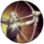Легенда: Рвение
Добивания врагов навсегда увеличивают вашу скорость атаки.
Легенда: Стойкость
Добивания врагов навсегда увеличивают вашу стойкость.
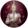Легенда: Родословная
Добивания врагов навсегда увеличивают ваш вампиризм.
Удар милосердия
Вы наносите больше урона чемпионам с низким уровнем здоровья.
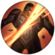Реванш
Вы наносите дополнительный урон чемпионам, у которых больше максимального здоровья, чем у вас.
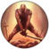Последний рубеж
Ваши атаки наносят чемпионам дополнительный урон, когда у вас мало здоровья.
Казнь электричеством
Наносит дополнительный адаптивный урон, если вы поражаете врага 3 отдельными атаками или умениями в течении 3 секунд.
Хищник
У ваших ботинок появляется активный эффект, который значительно увеличивает скорость передвижения, а также усиливает вашу следующую атаку или умение, благодаря чему они наносят дополнительный адаптивный урон.
Темная жатва
Чемпионы, большие миньоны и большие монстры оставляют после смерти эссенцию души. Коснитесь души, чтобы поглотить ее и нанести дополнительный адаптивный урон во время следующей автоатаки в зависимости от общего количества собранной эссенции души.
Град клинков
Значительно увеличивает скорость атаки первых 3 автоатак против вражеских чемпионов.
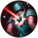Грязный прием
Наносит дополнительный чистый урон вражеским чемпионам, которые ограничены в передвижении или выполнении действий.
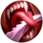Вкус крови
Восстанавливает здоровье, когда вы наносите урон вражескому чемпиону.
Внезапный удар
После прыжка, рывка, телепортации или выхода из скрытности ваши смертоносность и магическое пробивание ненадолго увеличивается.
Тотем-зомби
Если вы уничтожаете тотем, на его месте появляется ваш тотем-зомби. Кроме того, по окончании действия ваших тотемов они восстают в виде тотемов-зомби.
Призрачный поро
Когда вы входите в кусты, в них появляется поро. Он остается там, обеспечивая вам обзор.
Коллекция глаз
Вы получаете глаза за добивания чемпионов и тотемов. За каждый собранный глаз вы навсегда получаете силу атаки или силу умений. После сбора полной коллекции эти показатели увеличиваются еще сильнее.
Ненасытный охотник
Уникальные добивания дают постоянное лечение при нанесении урона умениями.
Изобретательный охотник
Уникальные добивания навсегда сокращают перезарядку активных предметов.
Беспощадный охотник
Уникальные добивания навсегда увеличивают скорость передвижения вне боя.
Абсолютный охотник
Уникальные добивания навсегда сокращают перезарядку вашего абсолютного умения.
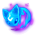Призыв пушинки
Ваши автоатаки и умения направляют Пушинку к цели: она наносит урон врагам или накладывает щит на союзников.
Магическая комета
Когда вы наносите урон умением чемпиону, туда, где он находится, падает комета, которая наносит урон.
 Фазовый рывок
Фазовый рывок
Поражая вражеского чемпиона 3 отдельными атаками или умениями, вы кратковременно увеличиваете свою скорость передвижения.
Сфера уничтожения
Если после получения магического урона у вас остается мало здоровья, вы получаете щит от магического урона.
Поток маны
Поражение вражеского чемпиона умением навсегда увеличивает ваш максимальный запас маны на 25 (вплоть до 250 маны). После получения 250 дополнительной маны восстанавливает 1% от вашей недостающей маны каждые 5 секунд.
Сияющий плащ
Вскоре после применения абсолютного умения ваша скорость передвижения увеличивается на 2.5 секунд (эффект ослабевает со временем), и вы получаете способность проходить сквозь бойцов.
Превосходство
Увеличивает сокращение перезарядки на 10%, когда вы достигаете 10 уровня. Избыточное сокращение перезарядки переходит в силу умений или силу атаки.
Быстрота
Ваша скорость передвижения увеличивается на 3%. Ваша сила умений или сила атаки увеличивается в зависимости от дополнительной скорости передвижения.
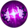Полная сосредоточенность
Когда уровень вашего здоровья выше 70%, вы наносите дополнительный адаптивный урон.
Ожог
Каждые 20 секунд ваше первое попадание умением обжигает чемпионов.
Хождение по воде
Увеличивает скорость передвижения, а также силу умений или силу атаки, когда вы находитесь на реке.
Надвигающаяся буря
По ходу игры вы получаете растущие прибавки к силе атаки или силе умений.
 Хватка нежити
Хватка нежити
Каждые 4 секунды ваша следующая автоатака против чемпиона наносит дополнительный магический урон, а также восстанавливает вам здоровье и навсегда увеличивает ваш запас здоровья.
Дрожь земли
После обездвиживания вражеского чемпиона ваши защитные показатели увеличивается, а затем вы наносите взрывной магический урон вокруг себя.
Страж
Вы защищаете ближайших союзников или союзников, к которым применяете заклинания. Если вы или защищенный союзник получаете урон, вы оба ускоряетесь и получаете щит.
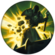Снос
Вы готовите мощную атаку против башни, когда находитесь поблизости от нее.
Живой источник
Ограничивая передвижение вражеский чемпионов, вы помечаете их. Когда ваши союзники атакуют помеченных чемпионов, они восстанавливают себе здоровье.
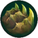Костяная пластина
После получения урона от вражеского чемпиона его следующие умения или автоатаки (до 3) наносят вам на 15-40 меньше урона.
Накопление
После 10 минуты вы получается 8 брони и 8 сопротивления магии; кроме того, ваши броня и сопротивление магии увеличивается на 5%.
Второе дыхание
При получении урона от вражеского чемпиона вы восстанавливаете себе здоровье в течении некоторого времени.
 Куколка
Куколка
С самого начала игры ваш запас здоровья увеличен на 50. Приняв участие в нескольких убийствах (4), вы поглощаете это здоровье и получаете 9 силы атаки или 15 силы умений.
Разрастание
Навсегда увеличивает максимальный запас здоровья, когда рядом умирают миньоны или монстры.
Оживление
Сила лечения и прочность щитов, которые вы накладываете или получаете, увеличиваются на 5%. Если у цели низкий уровень здоровья, сила эффектов увеличивается еще на 10%.
Неустрашимость
После использования заклинания призывателя ваши стойкость и сопротивление замедлению ненадолго увеличиваются. Кроме того, ваши стойкость и сопротивления замедления увеличиваются за каждое заклинание призывателя на перезарядке.
Ледяной нарост
Ваша первая атака против вражеского чемпиона замедляет его (на каждого чемпиона отдельная перезарядка). Замедляя чемпионов с помощью активных предметов, вы выпускаете в них ледяной луч, который создает вокруг них область замедления.
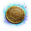Клептомантия
После применения умения ваша следующая атака против чемпиона дает вам золото. Кроме того, вы можете получить расходуемый предмет.
Раскрытая книга заклинаний
Вы заменяете заклинание призывателя вне боя. Выбирая уникальные заклинания призывателя, вы увеличиваете частоту, с которой можно осуществлять последующие замены.
Хекстековый скачок
Когда скачок находится на перезарядке, его заменяет хекс-скачок. Хекс-скачок: после подготовки перемещает вас на новое место.
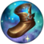Магическая обувь
Вы получаете бесплатные ботинки на 10 минуте, но не можете купить ботинки до этого момента. Каждое добивание сокращает время ожидания ботинок на 30 секунд.
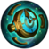Самое время
Дает бесплатный секундомер. Секундомер может единожды наложить на вас эффект стазиса.
 Рынок будущего
Рынок будущего
Вы можете покупать предметы в долг.
Дезинтегратор миньонов
Вы начинаете игру с предметом дезинтегратор миньонов с 6 зарядами. Убивая миньонов этим предметом, вы навсегда получаете прибавку к урону против миньонов этого типа.
Доставка печенья
Вы получаете бесплатную печеньку каждые 3 минуты вплоть до 12 минуты. При использовании печеньки вы навсегда увеличиваете свой максимальный запас маны, а также восстанавливаете здоровье и ману.
Космическое знание
+5% сокращение перезарядки, максимального сокращение перезарядки, сокращения перезарядки заклинаний призывателя, сокращения перезарядки предметов.
Скорость сближения
Увеличивает скорость передвижения при перемещении в сторону союзных чемпионов, у которых ограничено передвижение, или вражеских чемпионов, передвижение которых ограничили вы.
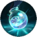Тоник искривления времени
Увеличивает продолжительность действия ваших зелий, печенек и элексиров на 20%. Во время действия их эффектов ваша скорость передвижения увеличивается на 5%.